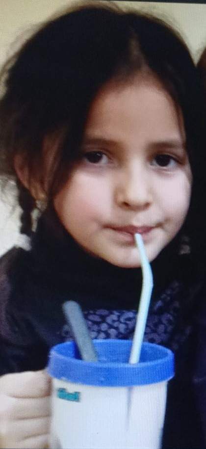
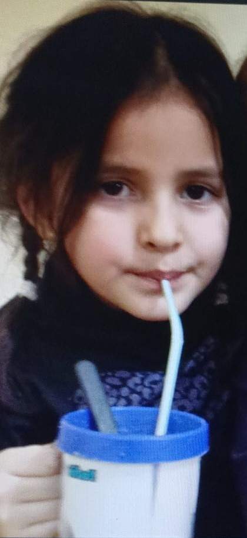

Mi familia
-
Mi familia esta formada por 5 integrantes (en realidad 6) que amo con toda mi alma, y daria todo por ellos son las personas que me hacen ver el lado feliz de mi vida que me apoyan en todas mis aventuras los que estan ahi siempre, los que me protegen pase lo que pase, son mi todo y la verdad no se que haria sin ellos. Como toda familia tenemos nuestros problemas pero como dice un dicho (nadie es perfecto) sobrevivimos, mi familia esta compuesta por mi mama es mi angel guardian, la que esta siempre que lo necesito, mi papa mi fuerza y en la persona que mas confio en este mundo, mi hermano que me hace reir, enojar, disfrutar y enseñarme a mejorar como hermano mayor, mi hermanita que al igual que mi hermano me hace enojar, pero yo daria todo por ellos, aveces pienso que no brindo lo mismo que ellos a mi pero bueno me toco ser el mas boludo de la familia, y la recien llegada que es mi novia que la amo mucho y que es la que me acompaña en todas mis ideas locas, y bueno mi familia tiene tantas anecdotas pero que las voy a contar en un futuro.
-
MI MAMI


Mi mami es la persona que mas amor me ha dado y siempre a estado conmigo
-
Amiguero sisteman
-
El Samu
-
La jojo

-
Mi amor
 
